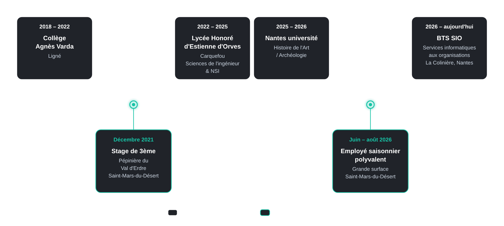

Projet 1
Contexte, objectifs et technologies utilisées.
Bonjour, je suis Lucas David, étudiant en BTS SIO (Services Informatiques aux Organisations) au lycée La Colinière à Nantes, dans la spécialité ... Toujours en cours d'étude, j'envisage de continuer mon cursus par une année de Bachelor en ... à l'issue de mon BTS. En attendant, je vous propose ce portfolio qui est une vitrine de mes réalisations académiques, de mes compétences et de mon parcours et je suis ravi de vous inviter à explorer mon travail. Vous découvrirez mes projets, mon engagement dans l'informatique et mes compétences en développement. Enfin, vous retrouverez ci-dessous mon CV.

A venir...
A venir...
Pour me joindre : lucas.david44@hotmail.com